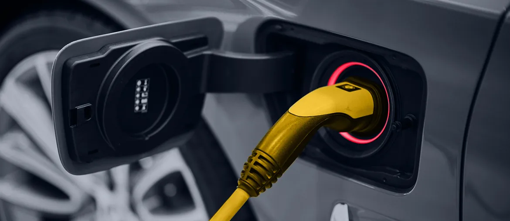

What we noticed
Two skill pools are visible
Group open software roles into EV/embedded validation and AI/test automation. Add a short matrix for CAN/LIN, HIL/SIL, C++, Python, and CI tooling before interviews.
Anders, this brief maps where Elinext could add vetted software engineers behind ALTEN's own delivery model, starting with EV, embedded, AI, and test capacity.
We saw a wide set of active roles, from EV calibration and flight software to AI, data pipelines, HIL systems, and embedded platforms.
The signal says ALTEN Technology USA is scaling delivery, not buying a tool. Your careers page shows software simulation, automation, test tool, AI and Data, and Electrical & Software Practice Manager roles at the same time. That mix points to a bench problem across EV, robotics, aerospace, and embedded work. If those roles stay open, client projects wait while managers spend time matching scarce skills. The risk is margin loss, slow starts, and more pressure on Anders's US delivery leaders.
Group open software roles into EV/embedded validation and AI/test automation. Add a short matrix for CAN/LIN, HIL/SIL, C++, Python, and CI tooling before interviews.
Your Software Engineering page names hardware abstraction and emulation as speed levers. Convert that into test templates and onboarding notes for client teams.
Use a dedicated squad under ALTEN's PM or delivery lead. Start with a six-week pilot that proves fit before any wider bench plan.
Small enough to govern, senior enough to remove pressure from hard searches.
Map capacity gapsBuild a shared skill map for EV calibration, embedded platforms, AI pipelines, and test automation needs.
Match the benchSend a small vetted bench for review, matched to CAN/LIN, C++, Python, DevOps, and QA automation.
Run one workstreamRun one pilot on validation scripts, simulation tools, or data pipeline backlog under ALTEN's PM.
Keep control clearUse weekly demos and clear handoffs so your team keeps client ownership and margin control.
Elinext is a full-cycle software development company, active since 1997, with about 700 in-house specialists and no freelancers. We build dedicated teams in mobile, web, backend, QA, DevOps, AI/ML, and C/C++ work across Europe, the US, Canada, Asia, and Australia. ISO 9001 and ISO 27001 practices help when quality, security, and delivery control matter. Our named customers include Siemens, Broadcom, Volkswagen, TRUMPF, and TUI. For ALTEN, the fit is a vetted capacity partner behind your PMs.

Elinext built iOS and Android apps for an EV charging solution, with full functionality released after ongoing work.
Read the case study
Elinext formed five teams for industrial software modernization and long-running support in a complex manufacturing environment.
Read the case study